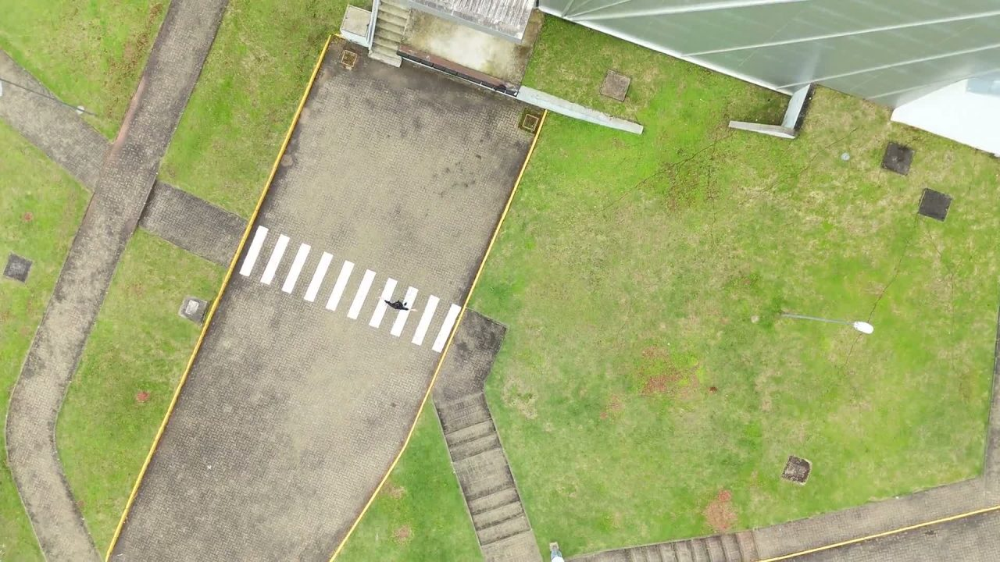
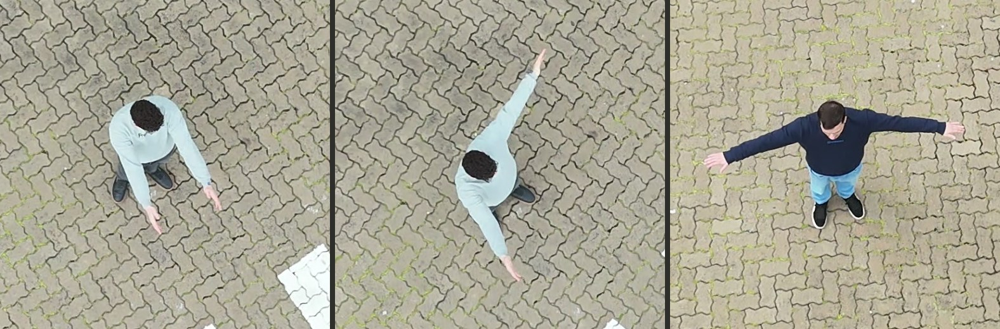
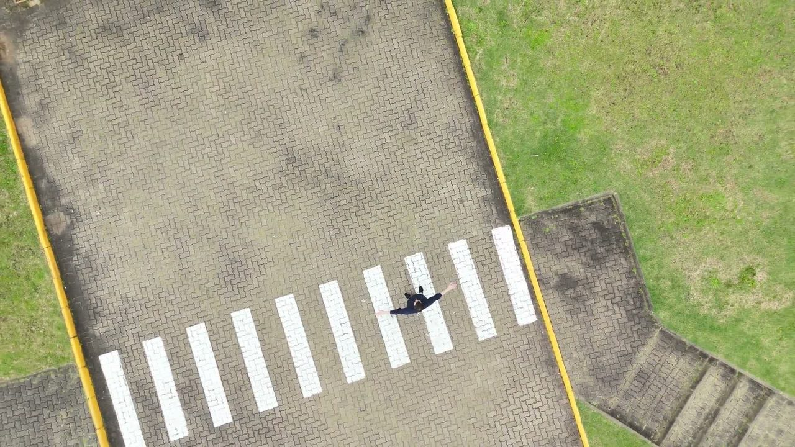
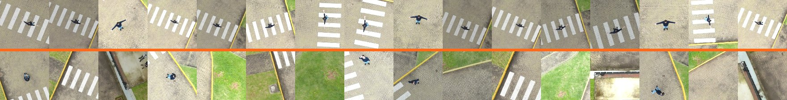

Drone de busca e resgate que reconhece um gesto de socorro visto de cima e avisa a equipe.
Jeferson Scheibler e Weslley Eduardo Panzer Freitas
Sistemas Interativos e de Visualização · Engenharia de Software · Univates
Prof. Edson Moacir Ahlert
01 · Problema, público e cenário
Ela está a 40 metros de você e ninguém consegue vê-la
Quem se perde em mata fechadararamente consegue gritar depois de horas de exaustão, e o celular costuma estar sem bateria ou sem sinal.
De cima, a copa esconde tudo.A busca aérea varre quilômetros quadrados, e a pessoa no chão ocupa poucos pixels no vídeo.
Público direto:a pessoa buscada, ferida, cansada, sem equipamento nenhum.
Público indireto:a equipe de busca, que precisa de uma coordenada confiável para decidir onde entrar a pé.
Cenário de uso
Varredura aérea sobre área de vários quilômetros quadrados, com o drone a 100 m do solo e cerca de 35 minutos de bateria por saída. A interação dura poucos segundos e só acontece uma vez.

a pessoa, a 33 m de altura
Quadro real de um dos nossos voos. O alvo da busca é aquele vulto escuro no meio do pátio.
ResgatAr01 / 13
02 · Problema de interação
Não existe tela nos dois lados
A interação convencional pressupõe um dispositivo na mão de alguém. Aqui, os dois lados quebram essa premissa.
Do lado da vítima:nada. Sem teclado, sem toque, sem voz audível a 100 metros, sem app para instalar em plena mata.
Do lado da equipe:a alternativa atual é um operador olhando vídeo aéreo durante os 38 minutos de rota. Atenção humana não sustenta isso, e o custo de um deslize é uma pessoa não encontrada.
O que a interação precisa ser
Feita com o corpo, a dezenas de metros de distância, sem contato, sem áudio e sem dispositivo, interpretada pela própria máquina em tempo real.
Não é uma interação não convencional por estilo. É a única categoria de interação que sobra quando se tiram o toque, a voz e o dispositivo.
Risco que define o projeto
Um movimento qualquer não pode virar alerta. Prevenção de erro deixa de ser detalhe de usabilidade e vira requisito central.
ResgatAr02 / 13
03 · Técnica escolhida e justificativa
Gesto corporal lido por visão computacional aérea
O gesto:braços estendidos na horizontal, um T visto da vertical.
Escolhido por medição,não por intuição: 13 gestos aeronáuticos da base UAV-GESTURE, 119 clipes, 37.151 quadros anotados.
Cinco critérios:abertura vista de cima, distância da postura de repouso, separabilidade, estabilidade no tempo e simetria entre os braços.
O T venceu nos cincoao mesmo tempo: 2,53 comprimentos de tronco de abertura contra 2,02 do segundo colocado.
Por que não acenar com os braços para cima
Visto da vertical, o braço erguido se projeta sobre a própria cabeça e some. O braço horizontal projeta a envergadura inteira no plano do solo.

Da esquerda para a direita, como a câmera do drone enxerga: em pé, um vulto compacto;
um braço erguido, quase igual ao anterior; braços na horizontal, inconfundível.
É esse contraste que o modelo precisa aprender.
ResgatAr03 / 13
04 · Tecnologias e fluxo de interação
Do braço aberto ao aviso na base
1 · UsuárioA pessoa abre os braços em T e sustenta a postura ao ver o drone.
2 · SensorCâmera de bordo, apontada para baixo, gravando ou transmitindo ao vivo.
3 · ProcessamentoUma janela varre o quadro e o modelo classifica cada recorte, no próprio navegador.
4 · AtuadorConfirmado o gesto por 1,5 s, a busca para e a posição é registrada.
5 · FeedbackA base recebe confiança, instante, posição no quadro e o recorte que decidiu.
Captura e preparo dos dados
DJI Flip para os voos, com a altura lida da telemetria gravada dentro do próprio MP4.
Python com ffmpeg, OpenCV e um detector de pessoas para recortar os quadros de treino.
Reconhecimento e interface
Teachable Machine para treinar o classificador de imagem e TensorFlow.js para executá-lo no navegador.
Interface própria em HTML, CSS e JavaScript. MediaMTX converte o RTMP do drone em WebRTC.
A pessoa não configura nada, não confirma nada e não recebe retorno na tela. Todo o custo da interação ficou do lado do sistema, que é o ponto da proposta.
ResgatAr04 / 13
05 · Storyboard, momento 1
Contexto e intenção
Onde ela está: caída num ponto qualquer da área de busca, há horas, sem conseguir andar até um lugar visível.
O que ela quer: ser vista. Ela escuta o zumbido do drone se aproximando e sabe que tem poucos segundos de janela.
Do alto, ela é um vulto de poucos pixels no meio do terreno. Nenhum operador consegue garantir que vai reparar nesse ponto a cada quadro de uma rota de 27 quilômetros.
Contexto
Intenção
Ação
Interpretação
Resposta
Drone a 33 m, quadro real do voo de captura.
ResgatAr05 / 13
06 · Storyboard, momento 2
A ação: ela abre os braços
O que ela faz: estende os braços na horizontal e segura a postura, olhando para cima.
Por que funciona: é o gesto mais barato que existe em termos de esforço, não depende de voz nem de equipamento, e é justamente o que ganha mais área quando visto da vertical.
Ela não precisa saber nada sobre o sistema. Não há menu, não há confirmação, não há erro possível de digitação. A instrução cabe em uma frase de campanha pública: se um drone se aproximar, abra os braços.
Contexto
Intenção
Ação
Interpretação
Resposta

Mesmo voo, drone a 14 m. A envergadura aberta passa a dominar o recorte.
ResgatAr06 / 13
07 · Storyboard, momento 3
Como o sistema interpreta
Procurandovarrendo o quadro, 98 posições
A janela laranja é exatamente o que o classificador recebe: um recorte de 224 por 224 pixels. Ela percorre o quadro em grade, com passo de meia janela.
Quando alguma posição passa de 50 por cento de confiança, a varredura para e a janela trava ali, passando a acompanhar a pessoa a cada ciclo, como o gimbal faria no drone real.
A confiança precisa ficar acima de 85 por cento por 1,5 segundo contínuo. Só então o sistema declara a localização, para a busca e congela o quadro.
A equipe recebe a confiança sustentada, o instante, a posição no quadro e o recorte exato que o modelo classificou. O recorte importa: é o que permite a um humano conferir a decisão da máquina em um segundo.
socorro: 97%
Contexto
Intenção
Ação
Interpretação
Resposta
localizado
Janela travada na pessoa, com o resto do quadro escurecido.
ResgatAr08 / 13
09 · Protótipo, a decisão de projeto
A conta que mudou o projeto inteiro
A concepção inicial era reconhecer o gesto direto na altura de varredura. Uma conta de óptica derrubou a ideia antes da primeira linha de código.
Com campo de visão de 84 graus e sensor de 1920 pixels, a 100 metros os braços abertos somam 18 pixels de ponta a ponta, e cada braço tem 1,1 pixel de espessura. Nenhum volume de dados resolve isso: a informação não chega ao sensor.
Consequência
A operação virou dois estágios: detectar a pessoa a 100 m, descer para 25 m e só então classificar o gesto. Esta entrega implementa e testa o segundo estágio, que é onde mora a interação.
Altura
Envergadura
Espessura
Classificável
100 m
18 px
1,1 px
não
50 m
36 px
2,1 px
não
25 m
72 px
4,3 px
sim
15 m
121 px
7,1 px
sim
Pessoa de 1,70 m de envergadura, braço de 10 cm de espessura.
E se trocar a câmera?
Mesmo em 4K, a 100 metros o braço fica com 2,1 pixels. O limite é geométrico, não de equipamento.
ResgatAr09 / 13
10 · Protótipo, dados e viés
Treinamos com voos nossos
Cinco voos no campus,seis minutos em 4K, entre 13 e 37 metros, com o drone orbitando para variar ângulo e escala.
Roteiro definido antes:o T, depois em pé, caminhando, sentado, deitado, um braço só, aceno, e terreno vazio.
Recorte de tamanho fixo no solo,cerca de 6 metros. Se o recorte acompanhasse o vulto, o modelo aprenderia escala em vez de postura.
O viés foi medido.Um classificador que só vê cor e brilho acertava 90 por cento, porque o voo do gesto saiu mais claro. Com ganho de brilho aleatório nas duas classes, caiu para 75.
214recortes socorro
331recortes sem socorro
90→75atalho de cor depois da correção
Por que isso importa
Sem esse cuidado o modelo mostraria acurácia alta separando o cenário do voo, e falharia no primeiro terreno novo.

Acima da linha laranja, a classe socorro. Abaixo, sem socorro: as mesmas pessoas em outras posturas, a cena do voo sem a pessoa e terreno vazio.
ResgatAr10 / 13
11 · Protótipo, demonstração
Funciona, e dá para conferir
Sobre o voo com o gesto:localizou entre 3,7 e 31 segundos de vídeo, com confiança sustentada de 90 a 100 por cento.
Com a janela sobre a pessoa:99 a 100 por cento. Deslocada 4 metros para o lado, cai a zero. O modelo responde à postura, não ao cenário.
Sobre o voo sem gesto(caminhando, um braço, agachado, deitado): o máximo encontrado em qualquer posição do quadro foi 13 por cento. Nunca travou.
Ao vivo:o mesmo fluxo rodou sobre a transmissão do drone via RTMP, localizando com 94 por cento.
97%confiança sustentada
1,5 sde confirmação exigida
31 mspor inferência no navegador
Tudo local, nada em servidor
A inferência roda no navegador com TensorFlow.js. Nenhum quadro de vídeo sai da máquina, que é a condição de operação em campo sem conectividade.
O critério é o mesmo em qualquer fonte: 85 por cento de confiança sustentados por 1,5 segundo. Abaixo disso o sistema registra a rejeição e continua procurando, porque avisar errado custa uma equipe deslocada à toa.
ResgatAr11 / 13
12 · Protótipo, limites e continuação
O que ainda não está provado
Limites honestos
Uma pessoa fez o gesto, de roupa escura, num piso só. Os trechos de teste vieram dos mesmos voos do treino, então isso prova o fluxo, não a generalização. A transmissão ao vivo esbarra no rádio do controle, que divide antena com o enlace do drone.
A varredura em grade leva cerca de 10 segundos por passada completa, e nesse intervalo alguém pode cruzar o quadro sem ser avaliado.
Continuação
Repetir o roteiro com outras pessoas, roupas e terrenos, e então treinar com um grupo e testar com outro.
Detector de pessoa antes do classificador,para apontar onde olhar em vez de varrer às cegas.
Ler a altura da telemetria no navegador,dimensionando a janela sozinha.
Separar duas saídas:pessoa encontrada e pedido de socorro confirmado. Quem está deitado e imóvel é justamente quem mais precisa.
Medir em uma placa real,com o modelo exportado em TensorFlow Lite.
ResgatAr12 / 13
Uma pessoa abre os braços. Só isso.
A interação mais simples possível do lado de quem precisa, e todo o trabalho do lado da máquina.